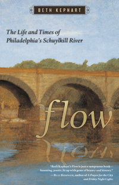

<body bgcolor="#FFFFFF" text="#000000" link="#0000FF" vlink="#CC0000" alink="#CC0000"><center><hr width="350" size="1" align="center" noshade>An autobiography of the Schuylkill, and a meditation on the river's impact on Philadelphia's history, people, and environment<hr width="350" size="1" align="center" noshade><p><a href="https://cdcshoppingcart.uchicago.edu/Cart/ChicagoBook.aspx?ISBN=9781592136360&&PRESS=temple" target="_top">Buy this book!</a> | <a href="https://cdcshoppingcart.uchicago.edu/Cart/Cart.aspx?PRESS=temple" target="_top">View Cart</a> | <a href="https://cdcshoppingcart.uchicago.edu/Cart/Cart.aspx?PRESS=temple" target="_top">Check Out</a></p><p></p></center><!--none//--><h1>Flow</h1>
<H2>The Life and Times of Philadelphia's Schuylkill River</H2>
<h3>Beth Kephart</h3>
<P>cloth 1592136362 $29.50, May 07, <FONT COLOR=#990033>Available</FONT>
<br>paper 1592136370 $14.95, May 14, <FONT COLOR=#990033>Available</FONT>
<br>Electronic Book 1592136389 $29.50 <FONT COLOR=#990033>Available</FONT>
<BR> 120 pp
5.5x8.5
18&nbsp;halftones
</P><BLOCKQUOTE><I>"Beth Kephart's </i>Flow<i> is just a sumptuous book &#8212;
haunting, poetic, lit up with gems of beauty and history. We engorge ourselves on materialism. The legacy of our generation will be our consumerism. But </i>Flow<i> and its exquisite evocation of the Schuylkill River reminds us that nature still trumps everything. Which makes the book all the more beautiful and all the more rare."</i>
<br><b>&#151Buzz Bissinger</b>, author of <i>A Prayer for the City</i> and <i>Friday Night Lights</i></I></BLOCKQUOTE>
<p>The Schuylkill River &#8212;
the name in Dutch means "hidden creek" &#8212; courses many miles, turning through Philadelphia before it yields to the Delaware. "I am this wide. I am this deep. A tad voluptuous, but only in places," writes Beth Kephart, capturing the voice of this natural resource in <i>Flow</i>.
<p>
An award-winning author, Kephart's elegant, impressionistic story of the Schuylkill navigates the beating heart of this magnificent water source. Readers are invited to flow through time-from the colonial era and Ben Franklin's death through episodes of Yellow Fever and the Winter of 1872, when the river froze over-to the present day. Readers will feel the silt of the Schuylkill's banks, swim with its perch and catfish, and cruise-or scull-downstream, from Reading to Valley Forge to the Water Works outside center city.
<p>
<i>Flow</i>'s lush narrative is peppered with lovely, black and white photographs and illustrations depicting the river's history, its people, and its gorgeous vistas. Written with wisdom and with awe for one of the oldest friends of all Philadelphians, <i>Flow</i> is a perfect book for reading while the ice melts, and for slipping in your bag for your own visit to the Schuylkill.
<BR>&nbsp;<h2>Excerpt</h2><P>Excerpt available at <a href="http://www.temple.edu/tempress">www.temple.edu/tempress</a></p>
<BR>&nbsp;<h2>Reviews</h2>
<p><i>"Only a poet and writer of Beth Kephart's lyric talent could give us a voice worthy of the great Schuylkill River. We have waited eons to hear the story she (and the river is a 'she') tells us, and </i>Flow<i> is worth the wait: Here is a song enriched with falling leaves and ascending souls; a poem composed of time and wind, fish and flotsam; and a riveting narrative of some of America's greatest heroes as well as some of our history's worst mistakes. Flow is seductive, thrilling, irresistible, life-changing. You cannot help but be swept away."</i><br><b>&#151Sy Montgomery</b>, author of <i>The Journey of the Pink Dolphins</i> and <i>The Good, Good Pig</i>
<p><i>"Kephart...provides an intimate meditation on the Schuylkill�s story."</i> <br>&#151;<b><i>Philadelphia Style</i></b>
<p><i>"In this autobiographical treatment, Kephart uses short lyrical essays and black-and-white photographs to let the Schuylkill River recount its life, it�s origin in creation and geography, its place in history, the famous personalities who graced its shores and crossed its water and its place in the hearts of Philadelphians who rely on it for water, recreation and solace."
</i> <br>&#151;<b><i>The Patriot-News</i></b>
<p><i>"</i>Flow<i> is a poetic meditation on the Schuylkill River�s place in Philadelphia�s history, transporting you back in time." </i><br>&#151;<b><i>Filmbill</i></b>
<p><i>"In her new book, Devon�s Beth Kephart poeticizes Philadelphia through the keen observations of its eldest resident, the Schuylkill River, which has long served as the city�s source of water, power, industry, and beauty. </i>Flow<i> adapts the river�s motion, winding past local events and retelling them with an imaginative and poignant voice."
</i> <br>&#151;<b><i>Main Line Today</i></b>
<p><i>"Kephart's well-researched essays provide historical nuance...a prescient contemporary account of the city's history. But it is the narrative poetry, in the taut female voice of the river, which makes this a book to descend into, slowly, with all senses at the ready....Kephart is a master not only of descriptive memory, but of constructing an existential vocabulary."</i> <br>&#151;<b><i>The Philadelphia City Paper</i></b>
<p><i>"[I]t goes proudly on your coffee table to advertise your intelligent indie reading."</i> <br>&#151;<b><i>aroundphilly.com</i></b>
<p><i> "I�ll see the Schuylkill differently on my ride home tonight, and maybe it�ll be a closer friend now." </i> <br>&#151;<b><i>UWISHUNU</i></b>
<p><i>"From the first footsteps of Native Americans, to wars, progress, industrialization, and beyond, the river serves up commentary with a mix of plain-spoken facts, dramatic embellishments and historical illustrations. The result is an engrossing and unusual take on the area."</i> <br>&#151;<b><i>Arrive</i></b>
<p><i>"An admirer transforms her glimpses of the life of the Schuylkill &#8212; once wild then pressed into human service, and now rediscovered for its remnant beauty&#8212; into spare prose that is often moving, whether or not you live in Philly."</i> <br>&#151;<b><i>Orion</i></b>
<p><i>"In this autobiographical treatment, Kephart uses short lyrical essays and black-and-white photographs to let the Schuylkill River recount its life, its origin in creation and geography, it�s place in history, the famous personalities who graced its shores and crossed its water and its place in the hearts of Philadelphians who rely on it for water, recreation and solace."
</i> <br>&#151;<b><i>The Patriot-News</i></b>
<p><i>"I can�t imagine a more beautiful book about a river than </i>Flow<i>."</i> <br>&#151;<b><i>University City Review</i></b>
<p><i>�Kephart gives the Schuylkill a voice, a memory, a melancholic sensibility. She has given us a finely-tuned and moving work of art, an exquisite book of loss and wanting. In 76 narrative poems and nearly as many short historical essays, Kephart returns the �hidden river� to its place in our hearts.�</i> <br>&#151;<b><i>Context</i></b>
<p><i>"What a gem!... I could not have asked for a more beautifully written, poetic and personal story of the Schuylkill River.... You may want to read this during the summer, when you can relax and absorb its powerful tale."</i> <br>&#151;<b><i>St. Albans Lower School blog</i></b>
<BR>&nbsp;<h2>Contents</h2><P>
<p>Table of Contents
<p>Preface
<p>Rising<br>
Bear<br>
Ganshowahanna<br>
Howling<br>
Flight<br>
Found<br>
Swarm<br>
Temptation<br>
Ice Storm<br>
Catfish<br>
Comet<br>
Confidante, Three Days Afterwards<br>
John Bartram<br>
Baptismal Rights<br>
State in Schuylkill<br>
Skating Party<br>
Tipsy<br>
Crossings<br>
Fort Mifflin<br>
Independence<br>
Confession<br>
Folly<br>
Ice<br>
Air<br>
Laurel<br>
Soul<br>
Yellow Fever<br>
Varnish<br>
The Hills<br>
Unplugged<br>
Meriwether Lewis<br>
Conflagration<br>
Progress<br>
Ornament<br>
Navigation<br>
Water Wheels<br>
Haven<br>
Meteors above the Colossus<br>
Love<br>
Eden<br>
Asylum<br>
Anthracite<br>
Fins<br>
Heroes<br>
Waste<br>
Civil War <br>
Respects<br>
Sculling<br>
Anthracite<br>
Nostalgia<br>
Steam<br>
Winter of 1872: Frozen Through<br>
Zoological Gardens<br>
Mighty<br>
Katherine Rows<br>
Intimations: Anthony Drexel<br>
Ooze<br>
Influenza<br>
Supperating<br>
Revenge<br>
Something<br>
Last Skate<br>
Abiding<br>
Kite Tails<br>
Falling Up<br>
Jewfish: The Aquarium at the Old Water Works<br>
Comet<br>
Flow<br>
Pussy Willows<br>
Hurricane Agnes<br>
Renditions<br>
Proverbial<br>
Something<br>
Catfish<br>
South Street Bridge Suicide<br>
Ernesta Drinker Ballard<br>
Blaze<br>
Love<br>
Bibliography<br>
Acknowledgment
</P><BR>&nbsp;<H2>About the Author(s)</H2>
<table><tr><td valign="top"><img src="/tempress/authors/1909_au.gif" height="90" width="75"></td><td width="100%" valign="middle"><p><b>Beth Kephart</b> the award-winning author of eighteen books, teaches creative nonfiction at the University of Pennsylvania, writes about memory and place for the <i>Philadelphia Inquirer</i>, and serves as the strategic writing partner in the boutique communications firm Fusion. Her acclaimed Philadelphia stories�<i>Flow: The Life and Times of Philadelphia�s Schuylkill River</i>; <i>Dangerous Neighbors</i>, a Centennial-era novel; and <i>Dr. Radway�s Sarsaparilla Resolvent</i>, a <i>Kirkus</i> Best Book of the Year�arose from her passion for her city.</P></td></tr></table>
<BR><H2>Subject Categories</H2>
<p><A HREF="/tempress/philly.html" TARGET="_top">Philadelphia Region</a>
<BR><A HREF="/tempress/literature.html" TARGET="_top">Literature and Drama</a>
<BR><A HREF="/tempress/general.html" TARGET="_top">General Interest</a>
</p>
<p align="center"><a href="https://cdcshoppingcart.uchicago.edu/Cart/ChicagoBook.aspx?ISBN=9781592136360&&PRESS=temple" target="_top">Buy this book!</a> | <a href="https://cdcshoppingcart.uchicago.edu/Cart/Cart.aspx?PRESS=temple" target="_top">View Cart</a> | <a href="https://cdcshoppingcart.uchicago.edu/Cart/Cart.aspx?PRESS=temple" target="_top">Check Out</a></p><p><font face="Arial" size="1"><a href="copyright.html" onMouseOver="window.status='Web Copyright Policy';return true;" onMouseOut="window.status=''" title="Web Copyright Policy">&copy;</a> 2015 <a href="http://www.temple.edu" target="new" onMouseOver="window.status='Link to Temple University home page';return true;" onMouseOut="window.status=''" title="Link to Temple University home page">Temple University</a>. All Rights Reserved. http://www.temple.edu/tempress/titles/1909_reg.html</font></p>